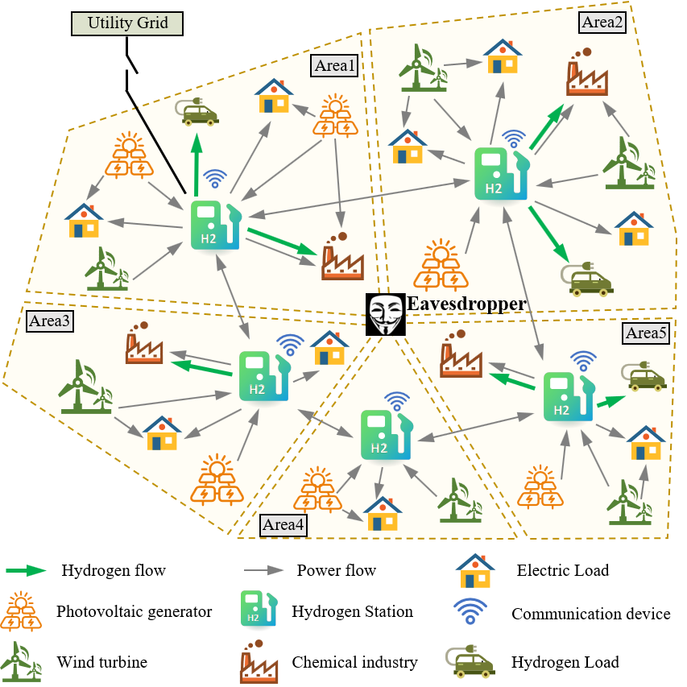

Research Topics
Distributed Control of Multi-agent Systems
A complex industrial system is a kind of cyber-physical system composed of multiple subsystems with different properties. With the properties of openness, sharing, heterogeneity, and interconnection, the efficient, safe, and stable operation of complex industrial systems has been an essential important support for manufacturing and networking development. We mainly focus on the collaborative analysis and control of networked industrial systems from the perspective of network science. Specifically, we are interested in pinning control of multi-agent systems (MASs), distributed cooperative control of heterogeneous MASs, event-triggered mechanisms (dynamic and fully distributed), and secure cooperative control of MASs. Furthermore, to verify the effectiveness of theoretical results, several simulation platforms are also developed based on multi-robot systems.

|

|
|
| Event-Triggered mechanism | Synchronization of singularly perturbed systems | System under attacks |

|
|
| Multi-agent Systems | 3D visual simulation software of multi-agent systems against DoS attacks |
Distributed Optimization and Games
Distributed optimization, with the aim of minimizing a finite sum of local objective functions,
has found its broad applications in various areas such as distributed sensing, cooperative control of multi-agent systems,
machine learning, smart grids, etc. By decomposing the large-scale optimization problem into sequences of smaller ones,
distributed algorithms guide agents' outputs/states toward the global optimal solution through local information exchange and
computation, exhibiting enhanced robustness, flexibility, and scalability compared to centralized ones.
The serious communication burden and privacy leakage resulting from existing distributed algorithms motivate our research of
enabling privacy protection and improving communication efficiency in distributed optimization. Specifically, we mainly focus on
developing privacy-preserving and event-triggered distributed algorithms so as to inherently protect sensitive information and achieve
efficient communication. In addition, the applications of distributed algorithms in distributed computing, signal processing, and
energy systems are also interesting topics for us. On the other hand, with the advance of MASs’ intelligence, the agent in MASs
evolves into a rational one who pursues its own interests. For such MASs composed of noncooperative agents,
the networked game provides us with a natural modeling paradigm to model the decision-making process among networks.
Such a networked noncooperative scheme is ubiquitous across many realms, such as power allocation in the energy internet,
lane-changing control of autonomous driving cars, and connectivity control in robotic swarms.
Our research focuses on designing decision-making rules for MASs from a microscopic perspective under imperfect information that
converges to equilibrium, where no agent has the intention to deviate. Particularly, we concern with the design of distributed
generalized Nash equilibrium seeking that are communication efficient, online learning strategies for games under dynamic
environments, and the optimal Nash equilibrium selection methods from a social-welfare perspective.
We also focus on the application of networked games foregrounds in swarm confrontation, multi-agent path planning, and so on.
|  | ||
| Distributed dynamic event-triggered optimization | Prvacy concerns in distributed systems | Image Classification based on differential private distributed optimization |
| Networked Nash-Cournot game | Path planning for 2 AGVs based on non-cooperative games | Collaborative path planning based on Stackelberg Games in MAS |
Collaborative Reinforcement Learning in Multi-Agent Systems
Multi-agent systems, where multiple intelligent agents cooperate and interact with each other to achieve shared objectives, have garnered significant attention in the field of artificial intelligence. These systems have diverse applications such as spanning robotics, autonomous vehicles, swarm intelligence, and so on. One of the key challenges in multi-agent systems is orchestrating effective cooperation among the agents to achieve the overall function of the system. Reinforcement learning (RL) has emerged as a powerful paradigm for teaching agents how to make sequences of decisions to accomplish tasks. In multi-agent RL, individual agents learn by interacting with their environment and each other to maximize collective rewards. However, the complexity of learning in a collaborative setting, where agents' actions are affected by both their own rewards and those of their peers, presents unique challenges. Cooperative reinforcement learning focuses on addressing these challenges by developing algorithms and strategies that encourage agents to work together harmoniously. This involves striking a delicate balance between competition and cooperation, as agents may sometimes have conflicting objectives. Our research interests in cooperative reinforcement learning include distributed network cooperative reinforcement learning algorithms, multi-agent coordination, communication protocols, reward-sharing mechanisms, and policy optimization. Furthermore, the applications of cooperative reinforcement learning, such as multi-agent robotics path planning, and resource allocation in smart gird are also interesting topics for us.
| Multi-agent path planning environment | Reward comparison of different methods | Structure of reinforcement learning path planning | Path palnning trajectory of single agent | Path palnning trajectory of multi agents |